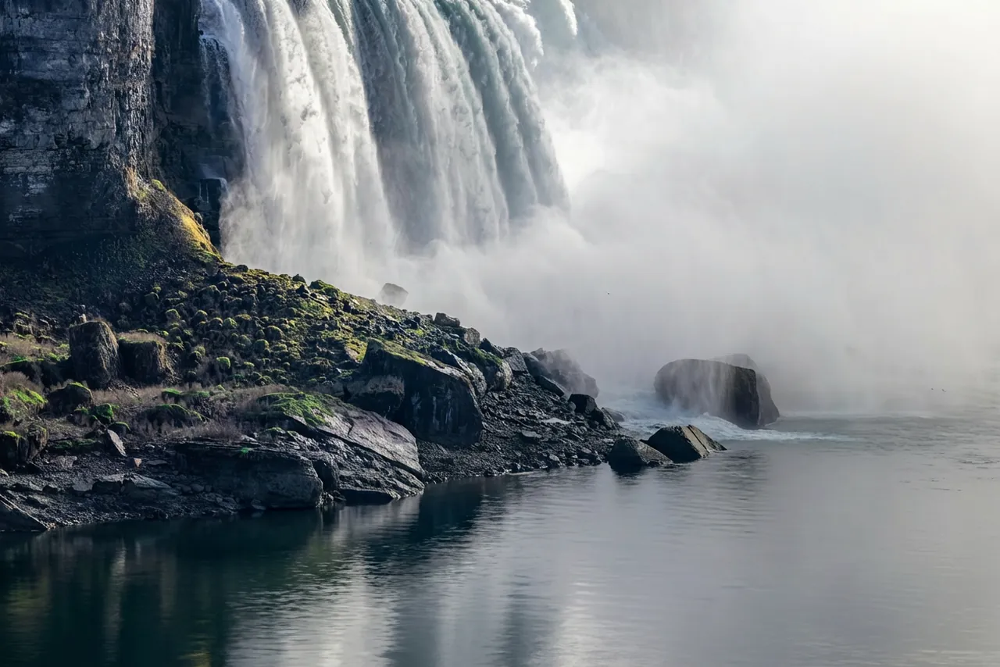

Removing Unwanted Objects and Editing Text in Photos With Natural-Language Prompts

Traditional photo retouching splits cleanup into two tedious chores: painting pixel-accurate masks around tourists, power lines or table clutter with a clone stamp, and hunting down matching fonts and perspective warps whenever a sign, poster or label has the wrong wording. Prompt-driven image editing replaces both manual steps with a single sentence—you tell the model what object to erase or which words to swap, and the model reconstructs the background or typography in context.
Erasing distractions without drawing a mask
Brush-based healing tools often leave a telltale smudge around complex boundaries like hair, tree branches, water ripples or glass reflections, because you have to decide exactly where the mask edge stops. With a prompt-driven AI object remover, there is no brush or lasso. You upload a JPG, PNG or WebP image up to 10 MB (if your photo is a HEIC from an iPhone, export it to JPG first) and describe what should disappear in one clear sentence.
Specific descriptions work best. Instead of writing "clean up background," write:
- "Remove the tour boat in the lower right water and fill with natural waves."
- "Erase the yellow sticky notes on the monitor bezel."
- "Remove the pedestrians walking behind the couple on the bridge."
On Monipix, the Object Remover outputs at 1K, 2K or 4K resolution. The default 2K pass using Nano Banana Pro costs 10 credits (or 8 credits if you select the Nano Banana 2 model option), while a 4K export costs 18 credits. Because the model understands scene geometry, it rebuilds brick walls, lake reflections and wood grain across the area the object used to occupy.
Changing words, numbers and dates inside a photo
Fixing a typo on a printed banner, updating a store sign's hours, or localizing a mockup poster used to require rebuilding the entire text layer in a design app. When you only have the flattened image, the edit text in image tool lets you specify the existing text and the replacement words in plain language while preserving the original lettering style, lighting, surface texture and perspective.
Like Object Remover, it accepts JPG, PNG or WebP files up to 10 MB and exports at 1K or 2K for 10 credits, or 4K for 18 credits. To get reliable typography on the first or second run, keep three practical boundaries in mind:
- Keep replacements short and direct. Single words, store names, prices, jersey numbers and dates come out cleanest. Long multi-line paragraphs, tiny fine print, heavily curved lettering or uncommon handwriting scripts are much harder for any image model to spell accurately, and results can vary between runs.
- Quote the exact before and after strings. For example: Change the sign text from "OPEN DAILY 9-5" to "OPEN DAILY 8-6" keeping the same white stencil letters.
- Respect legal and ethical guardrails. Never use in-image text editing on government IDs, passports, official documents, receipts, invoices or certificates, or to alter logos and trademarks you do not own.
Account requirements and credit planning
While Monipix's 10 free monthly credits cover 2x–16x image upscaling, AI editing tools (Object Remover and Edit Text in Image) require a paid subscription—starting at $19.90/month for 600 credits—or any one-time credit pack (from $29.90 for 500 credits that never expire). Credits are held when a job starts and automatically refunded to your balance if a generation ever fails.
Cleanup workflow summary
| Task | Input limit | Output tiers | Credits per run |
|---|---|---|---|
| Object Remover (Nano Banana Pro default) | JPG/PNG/WebP up to 10 MB | 1K, 2K, 4K | 10 credits (1K/2K), 18 credits (4K) |
| Object Remover (Nano Banana 2 option) | JPG/PNG/WebP up to 10 MB | 2K | 8 credits |
| Edit Text in Image | JPG/PNG/WebP up to 10 MB | 1K, 2K, 4K | 10 credits (1K/2K), 18 credits (4K) |